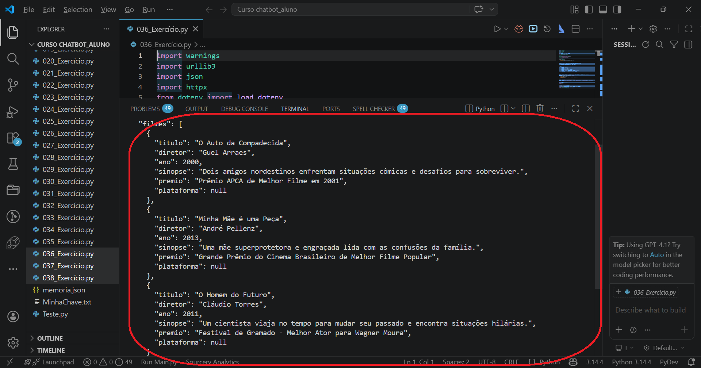
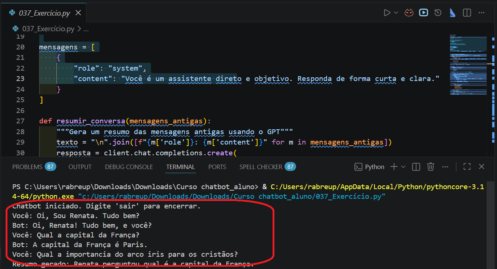
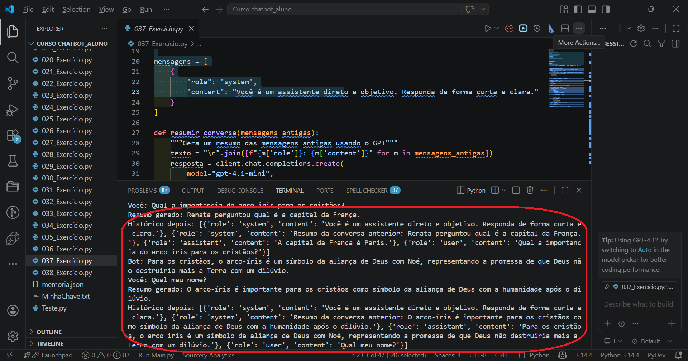
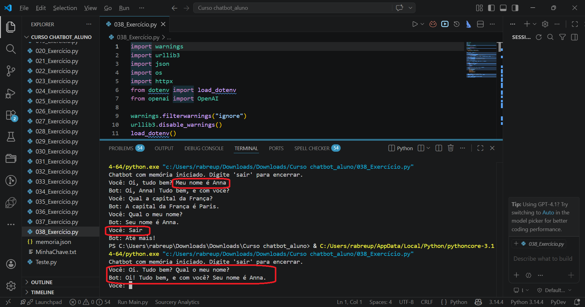
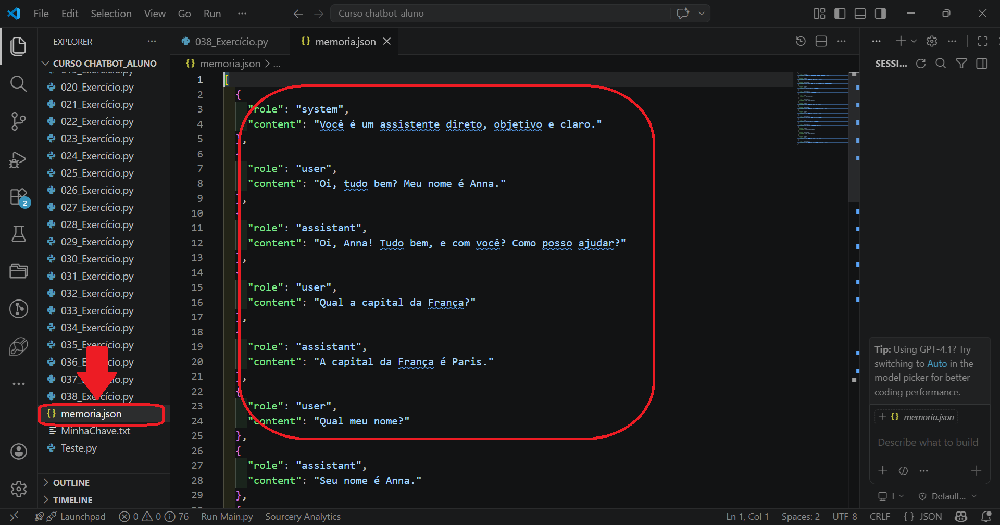

Até agora, o GPT sempre respondeu em texto corrido, como se estivesse escrevendo uma mensagem. Isso funciona bem para conversa. Mas pensa no seguinte: e se nós quisermos usar a resposta em alguma outra parte do sistema? Exibir numa tabela, salvar num banco de dados, processar automaticamente? Texto livre não serve para isso.
É aí que entra o JSON. Em vez de pedir ao GPT que escreva uma resposta, nós pedimos que ele organize as informações num formato estruturado que o Python consegue ler e manipular diretamente. Nesta aula nós também vamos atacar um problema que surgiu na aula passada: o histórico que cresce sem parar. Em vez de simplesmente cortá-lo, nós vamos fazer algo mais inteligente, resumir o que já foi dito antes de descartar.
Antes de ver o código, precisamos entender o que é JSON. A sigla vem do inglês JavaScript Object Notation, mas não deixe isso te assustar: JSON é só uma forma de organizar informações usando chave e valor, como uma ficha bem estruturada. Você já viu algo parecido no Python quando usamos dicionários.
json, já inclusa na linguagemUm exemplo simples: imagine que pedimos ao GPT informações sobre um filme. Em vez de uma resposta em parágrafo, nós pedimos que ele responda assim:
{
"titulo": "Estômago",
"diretor": "Marcos Jorge",
"ano": 2007,
"genero": "Drama/Comédia",
"sinopse": "Raimundo Nonato descobre o poder da culinária ao chegar em São Paulo.",
"avaliacao": null
}
Perceba o campo "avaliacao": null. Quando um campo não tem um valor confiável, nós instruímos o GPT a retornar null em vez de inventar um número. Isso é fundamental: a IA pode alucinar dados, e campos com valores fictícios causam problemas sérios num sistema real. O null diz claramente "esse campo existe, mas não tenho informação confiável aqui".
Por padrão, sim. É por isso que o prompt precisa ser muito específico. Nós instruímos o GPT no system prompt a retornar apenas JSON válido, sem nenhum texto fora do formato, sem explicações, sem introdução. E além disso, nós descrevemos exatamente a estrutura que queremos, campo por campo, indicando quais são obrigatórios e quais podem ser null.
Vamos ver como isso funciona na prática. O código abaixo pede ao GPT que responda sobre filmes de comédia brasileiros premiados, sempre em JSON estruturado:
import warnings import urllib3 import json import httpx from dotenv import load_dotenv from openai import OpenAI import os warnings.filterwarnings("ignore") urllib3.disable_warnings() load_dotenv() client = OpenAI( api_key=os.getenv("OPENAI_API_KEY"), http_client=httpx.Client(verify=False) ) prompt = """Me dê 3 filmes de comédia brasileiros premiados. Responda APENAS em JSON válido, sem nenhum texto fora do JSON. Use exatamente esta estrutura para cada filme: { "filmes": [ { "titulo": "string", "diretor": "string", "ano": número, "sinopse": "string com 1 frase", "premio": "string descrevendo o prêmio principal", "plataforma": "string ou null se não souber" } ] } Regras: retorne apenas JSON válido. Se não tiver certeza de algum campo, use null.""" resposta = client.chat.completions.create( model="gpt-4.1-mini", messages=[{"role": "user", "content": prompt}], temperature=0.2 ) texto = resposta.choices[0].message.content texto = texto.strip().removeprefix("```json").removeprefix("```").removesuffix("```").strip() print("Resposta da IA:") print(texto) print("---") try: dados = json.loads(texto) print("\nPrimeiro filme:", dados["filmes"][0]["titulo"]) except json.JSONDecodeError: print("A IA não retornou JSON válido.")
| import json | Importa a biblioteca de JSON do Python. Ela já vem instalada com o Python, não precisa de pip. Nós a usamos para converter a string de texto que o GPT retornou num dicionário Python que o código consegue acessar. |
| o prompt com estrutura | O coração desse código. Em vez de fazer uma pergunta aberta, nós descrevemos exatamente o JSON que queremos: os campos, os tipos de dado de cada um e a regra de usar null quando necessário. Quanto mais precisa a estrutura no prompt, mais confiável a resposta. |
| temperature=0.2 | Temperature baixa para dados estruturados. Nós não queremos criatividade aqui, queremos precisão. Com 0.2 o GPT tende a ser mais consistente no formato, reduzindo a chance de ele sair do JSON. |
| texto = texto.strip()... | Remove marcações de markdown que o GPT às vezes insere. Mesmo pedindo apenas JSON, o modelo pode embrulhar a resposta com ```json e ```. O removeprefix() remove o início se ele existir, e o removesuffix() remove o fechamento. Com isso, o json.loads() sempre recebe um texto limpo. |
| print(texto) | Exibe o JSON bruto que a IA retornou. Esse é o resultado real da chamada: uma string com estrutura JSON. É importante ver isso para entender que a IA respondeu em formato estruturado, não em texto livre. |
| json.loads(texto) | Converte a string JSON em dicionário Python. O GPT devolve tudo como texto. O json.loads() lê esse texto e transforma num dicionário real, com o qual nós podemos usar colchetes, loops e tudo mais. |
| dados["filmes"][0]["titulo"] | Navega dentro do dicionário. Depois do json.loads(), dados é um dicionário Python normal. Nós acessamos a lista de filmes, pegamos o primeiro item com [0] e lemos o campo "titulo" diretamente. |
| except json.JSONDecodeError | Trata o caso em que o JSON não é válido. Mesmo pedindo explicitamente, a IA às vezes comete algum erro de formatação. O except captura esse erro sem travar o programa. |

Como falamos um pouco mais para cima, nem tudo o que o Chat retorna podemos confiar 100%, nesse exemplo, ele retornou premios que os filmes "Minha Mãe é uma Peça" e "Homem do Futuro" não receberam. kkk Por isso fique atento, sempre valide as informações.
Veja que o terminal mostra o JSON puro, exatamente como a IA retornou. Esse é o dado estruturado. A linha seguinte já mostra que o Python consegue navegar dentro dele com dados["filmes"][0]["titulo"]. Isso é o que faz a diferença quando nós precisamos usar a resposta da IA num sistema real: não texto livre, mas dados com estrutura definida, que o código consegue acessar campo por campo.
O json.loads() vai falhar, e o except vai capturar o erro. Por isso o prompt precisa ser muito claro: "retorne APENAS JSON válido, sem nenhum texto fora do JSON". Na maioria das vezes o GPT obedece, mas nunca é 100% garantido. Uma estratégia adicional é procurar o primeiro { na resposta e extrair só a partir daí, descartando qualquer introdução que a IA tenha adicionado. Nós não precisamos fazer isso agora, mas é bom saber que existe.
Nós podemos usar esse mesmo padrão para qualquer tipo de dado estruturado. No exemplo abaixo, nós pedimos uma explicação das Leis de Newton, mas toda organizada em JSON com campos definidos:
prompt = """Explique a Primeira Lei de Newton. Responda APENAS em JSON válido com esta estrutura: { "nome": "string", "descricao_simples": "string", "formula": "string ou null se não houver", "exemplo_pratico": "string", "explicacao_detalhada": "string" } Sem texto fora do JSON."""
Antes de avançar, tem um ponto que faz muita diferença na hora de montar o prompt: nem todos os campos de um JSON precisam sempre ter valor. A distinção entre campos obrigatórios e campos opcionais precisa estar explícita no prompt, ou o GPT vai inventar valores onde não há nada a dizer.
O exemplo mais claro é uma receita. Pensa assim: toda receita tem um modo de preparo. Esse campo é obrigatório, sempre. Mas o campo "recheio" só faz sentido para certos tipos de prato. Um bolo recheado tem. Uma salada não tem. Se nós não dissermos isso no prompt, o GPT vai preencher "recheio" com algo inventado para a salada, só para não deixar o campo vazio. O mesmo vale para "massa", que existe numa lasanha mas não num frango grelhado, e para "molho", que existe numa macarronada mas não num brigadeiro.
modo_preparonull quando não se aplicaNo prompt, a instrução fica assim: "campos como recheio, massa e molho devem ser retornados como null quando não se aplicarem ao tipo de receita". Dessa forma, o sistema que recebe o JSON sabe exatamente o que esperar: se o campo está null, é porque aquele prato simplesmente não tem aquele componente, não é porque a IA esqueceu.
null quando não tiver certeza. Um null honesto é infinitamente melhor do que um dado falso convincente.
Nós acabamos de ensinar o GPT a falar em JSON. Descansa um pouco, e quando voltar a gente resolve o segundo problema: a memória que cresce sem parar.
Voltou? Ótimo. Vamos falar de memória. Na aula passada nós cortávamos o histórico quando ele ficava longo, mantendo só as últimas mensagens. O problema é que ao cortar, nós perdemos contexto. Se o usuário disse o nome dele na primeira mensagem e depois de 10 trocas o histórico foi cortado, o bot esquece o nome. Isso é ruim.
A solução é mais elegante: em vez de simplesmente descartar as mensagens antigas, nós pedimos ao próprio GPT que as resuma numa frase curta. Esse resumo ocupa muito menos espaço que as mensagens originais, mas preserva o essencial do que foi discutido. O histórico deixa de crescer infinitamente, mas o contexto não se perde.
Veja como isso fica no código:
import warnings import urllib3 import httpx from dotenv import load_dotenv from openai import OpenAI import os warnings.filterwarnings("ignore") urllib3.disable_warnings() load_dotenv() client = OpenAI( api_key=os.getenv("OPENAI_API_KEY"), http_client=httpx.Client(verify=False) ) LIMITE_MENSAGENS = 10 ULTIMAS_MENSAGENS = 5 mensagens = [ { "role": "system", "content": "Você é um assistente direto e objetivo. Responda de forma curta e clara." } ] def resumir_conversa(mensagens_antigas): """Gera um resumo das mensagens antigas usando o GPT""" texto = "\n".join([f"{m['role']}: {m['content']}" for m in mensagens_antigas]) resposta = client.chat.completions.create( model="gpt-4.1-mini", messages=[ {"role": "system", "content": "Resuma a conversa abaixo em no máximo 1 frase curta."}, {"role": "user", "content": texto} ], max_tokens=50, temperature=0.2 ) return resposta.choices[0].message.content print("Chatbot iniciado. Digite 'sair' para encerrar.") while True: pergunta = input("Você: ").strip() if pergunta.lower() == "sair": print("Bot: Até mais!") break if not pergunta: continue mensagens.append({"role": "user", "content": pergunta}) # Se passou do limite, resumimos as mensagens mais antigas if len(mensagens) > LIMITE_MENSAGENS: antigas = mensagens[1:-ULTIMAS_MENSAGENS] if antigas: resumo = resumir_conversa(antigas) mensagens = [ mensagens[0], {"role": "system", "content": f"Resumo da conversa anterior: {resumo}"} ] + mensagens[-ULTIMAS_MENSAGENS:] try: resposta = client.chat.completions.create( model="gpt-4.1-mini", messages=mensagens, max_tokens=80, temperature=0.2, frequency_penalty=0.4, presence_penalty=0.2 ) texto = resposta.choices[0].message.content except Exception as e: print(f"Erro na API: {e}") texto = "Desculpe, houve um erro." mensagens.append({"role": "assistant", "content": texto}) print("Bot:", texto)
| LIMITE_MENSAGENS = 10 | Define quando o resumo é acionado. Quando o histórico ultrapassar 10 mensagens, o código vai separar as mais antigas e resumi-las. Esse valor pode ser ajustado conforme o custo que queremos controlar. |
| ULTIMAS_MENSAGENS = 5 | Quantas mensagens recentes preservar intactas. As últimas 5 mensagens ficam no histórico sem resumo, porque são o contexto mais imediato da conversa. Somente as anteriores a elas são comprimidas. |
| def resumir_conversa(mensagens_antigas) | Uma função separada que faz uma chamada à API só para resumir. Nós passamos as mensagens antigas como texto, pedimos ao GPT um resumo em 1 frase curta, e retornamos esse resumo. É uma chamada pequena e barata, com max_tokens=50. |
| texto = "\n".join([...]) | Junta todas as mensagens antigas numa string só. O join concatena os itens da lista separando cada um por uma quebra de linha. Assim nós transformamos a lista de dicionários num texto que o GPT consegue ler para resumir. |
| mensagens[1:-ULTIMAS_MENSAGENS] | Pega as mensagens do meio: nem o system prompt, nem as recentes. O [1:] pula o system prompt (posição 0). O [:-5] para antes das últimas 5. O resultado é exatamente o bloco "velho" que será resumido. |
| mensagens = [mensagens[0], resumo_msg] + mensagens[-5:] | Reconstrói o histórico comprimido. Fica com: o system prompt original, uma nova mensagem de sistema com o resumo, e as últimas 5 mensagens reais. O histórico nunca cresce além disso. |


Depende do que o GPT considerou importante no resumo. Por padrão, um resumo de 1 frase prioriza o tema da conversa, não detalhes pessoais. É por isso que, em situações onde dados do usuário importam, a solução mais robusta é salvar essas informações em arquivo, em vez de depender que o resumo as preserve.
Tem uma situação comum em projetos reais: o chatbot termina a sessão e na próxima vez que o usuário abre, tudo foi perdido. Para resolver isso, nós podemos salvar a lista de mensagens inteira num arquivo JSON no disco. Na próxima sessão, nós carregamos esse arquivo e o chatbot continua de onde parou.
import warnings import urllib3 import json import os import httpx from dotenv import load_dotenv from openai import OpenAI warnings.filterwarnings("ignore") urllib3.disable_warnings() load_dotenv() client = OpenAI( api_key=os.getenv("OPENAI_API_KEY"), http_client=httpx.Client(verify=False) ) ARQUIVO_MEMORIA = "memoria.json" def carregar_memoria(): if os.path.exists(ARQUIVO_MEMORIA): try: with open(ARQUIVO_MEMORIA, "r", encoding="utf-8") as f: return json.load(f) except (json.JSONDecodeError, ValueError): pass return [{"role": "system", "content": "Você é um assistente direto, objetivo e claro."}] def salvar_memoria(mensagens): with open(ARQUIVO_MEMORIA, "w", encoding="utf-8") as f: json.dump(mensagens, f, ensure_ascii=False, indent=2) mensagens = carregar_memoria() print("Chatbot com memória iniciado. Digite 'sair' para encerrar.") while True: pergunta = input("Você: ").strip() if pergunta.lower() == "sair": print("Bot: Até mais!") break if not pergunta: continue mensagens.append({"role": "user", "content": pergunta}) resposta = client.chat.completions.create( model="gpt-4.1-mini", messages=mensagens, max_tokens=80, temperature=0.2, frequency_penalty=0.4, presence_penalty=0.2 ) texto = resposta.choices[0].message.content mensagens.append({"role": "assistant", "content": texto}) print("Bot:", texto) # Salva o histórico completo após cada resposta salvar_memoria(mensagens)
| ARQUIVO_MEMORIA = "memoria.json" | Define o nome do arquivo onde o histórico será salvo. Esse arquivo fica na mesma pasta do script. Se você abrir num editor depois de conversar, vai ver todas as mensagens em formato JSON. |
| def carregar_memoria() | Lê o arquivo e retorna as mensagens salvas. Se o arquivo não existir ainda, primeira execução, retorna uma lista com apenas o system prompt padrão. Nas execuções seguintes, o chatbot começa exatamente de onde parou. |
| def salvar_memoria(mensagens) | Grava a lista inteira de mensagens no arquivo JSON. O ensure_ascii=False garante que acentos sejam salvos corretamente. O indent=2 formata o arquivo de forma legível. |
| salvar_memoria(mensagens) | Salva após cada resposta. Isso garante que, mesmo que o programa feche de forma inesperada, nada seja perdido. O arquivo sempre está atualizado com a conversa mais recente. |


Exatamente, esse é o ponto. A memória persistente em arquivo guarda tudo, o que é ótimo para contexto, mas pode ficar pesado. Por isso os dois mecanismos se complementam: a memória resumida controla o tamanho em memória, e o arquivo persiste entre sessões. Você pode combinar os dois conforme a necessidade do projeto.
Agora é a sua vez.
039_Exercicio.py com o código visto na aula"livros" existe no dicionário retornadoimport warnings import urllib3 import json import httpx from dotenv import load_dotenv from openai import OpenAI import os warnings.filterwarnings("ignore") urllib3.disable_warnings() load_dotenv() client = OpenAI( api_key=os.getenv("OPENAI_API_KEY"), http_client=httpx.Client(verify=False) ) prompt = """Me dê 3 livros clássicos da literatura brasileira. Responda APENAS em JSON válido, sem nenhum texto fora do JSON. Use exatamente esta estrutura: { "livros": [ { "titulo": "string", "autor": "string", "ano": número, "sinopse": "string com 1 frase", "disponivel_digitalmente": true ou false ou null } ] } Sem texto fora do JSON.""" resposta = client.chat.completions.create( model="gpt-4.1-mini", messages=[{"role": "user", "content": prompt}], temperature=0.2 ) texto = resposta.choices[0].message.content texto = texto.strip().removeprefix("```json").removeprefix("```").removesuffix("```").strip() try: dados = json.loads(texto) if "livros" not in dados: print("Campo 'livros' não encontrado no JSON.") else: for livro in dados["livros"]: print(f"Título: {livro['titulo']} ({livro['ano']})") print(f"Autor: {livro['autor']}") print(f"Sinopse: {livro['sinopse']}") print(f"Digital: {livro['disponivel_digitalmente']}") print("---") except json.JSONDecodeError: print("JSON inválido. Resposta bruta:") print(texto)
040_Exercicio.py com o código de memória persistente visto na aulamemoria.json gerado e observe como o histórico foi salvoimport warnings import urllib3 import json import os import httpx from dotenv import load_dotenv from openai import OpenAI warnings.filterwarnings("ignore") urllib3.disable_warnings() load_dotenv() client = OpenAI( api_key=os.getenv("OPENAI_API_KEY"), http_client=httpx.Client(verify=False) ) ARQUIVO_MEMORIA = "memoria.json" def carregar_memoria(): if os.path.exists(ARQUIVO_MEMORIA): try: with open(ARQUIVO_MEMORIA, "r", encoding="utf-8") as f: return json.load(f) except (json.JSONDecodeError, ValueError): pass return [{"role": "system", "content": "Você é um assistente direto, objetivo e claro."}] def salvar_memoria(mensagens): with open(ARQUIVO_MEMORIA, "w", encoding="utf-8") as f: json.dump(mensagens, f, ensure_ascii=False, indent=2) mensagens = carregar_memoria() print("Chatbot com memória iniciado. Digite 'sair' para encerrar.") while True: pergunta = input("Você: ").strip() if pergunta.lower() == "sair": print("Bot: Até mais!") break if not pergunta: continue mensagens.append({"role": "user", "content": pergunta}) resposta = client.chat.completions.create( model="gpt-4.1-mini", messages=mensagens, max_tokens=80, temperature=0.2, frequency_penalty=0.4, presence_penalty=0.2 ) texto = resposta.choices[0].message.content mensagens.append({"role": "assistant", "content": texto}) print("Bot:", texto) salvar_memoria(mensagens)
041_Exercicio.py com um tema completamente à sua escolha: séries, jogos, receitas, músicas, qualquer coisanullnull quando não tiver certezajson.loads() para ler o resultado e exiba os dados de forma organizada no terminalJSONDecodeError mostrando a resposta bruta se o JSON não for válidoimport warnings import urllib3 import json import httpx from dotenv import load_dotenv from openai import OpenAI import os warnings.filterwarnings("ignore") urllib3.disable_warnings() load_dotenv() client = OpenAI( api_key=os.getenv("OPENAI_API_KEY"), http_client=httpx.Client(verify=False) ) prompt = """Me dê 3 séries brasileiras populares. Responda APENAS em JSON válido, sem nenhum texto fora do JSON. Use exatamente esta estrutura: { "series": [ { "titulo": "string", "genero": "string", "ano_estreia": número, "plataforma": "string", "sinopse": "string com 1 frase", "avaliacao_imdb": número ou null } ] } Use null quando não tiver certeza do valor. Sem texto fora do JSON.""" resposta = client.chat.completions.create( model="gpt-4.1-mini", messages=[{"role": "user", "content": prompt}], temperature=0.2 ) texto = resposta.choices[0].message.content texto = texto.strip().removeprefix("```json").removeprefix("```").removesuffix("```").strip() try: dados = json.loads(texto) for serie in dados["series"]: print(f"Série: {serie['titulo']} ({serie['ano_estreia']})") print(f"Gênero: {serie['genero']} | Plataforma: {serie['plataforma']}") print(f"Sinopse: {serie['sinopse']}") print(f"IMDB: {serie['avaliacao_imdb'] or 'sem avaliação'}") print("---") except json.JSONDecodeError: print("JSON inválido. Resposta bruta:") print(texto)
042_Exercicio.py com um chatbot de atendimento de um restaurante fictício chamado Sabor & Arteimport warnings import urllib3 import httpx from dotenv import load_dotenv from openai import OpenAI import os warnings.filterwarnings("ignore") urllib3.disable_warnings() load_dotenv() client = OpenAI( api_key=os.getenv("OPENAI_API_KEY"), http_client=httpx.Client(verify=False) ) LIMITE_MENSAGENS = 8 ULTIMAS_MENSAGENS = 4 nome_cliente = input("Sabor & Arte: Olá! Qual é o seu nome? ").strip() mensagens = [ { "role": "system", "content": ( f"Você é o assistente virtual do restaurante Sabor & Arte. " f"O cliente se chama {nome_cliente}. Use o nome dele ocasionalmente para personalizar. " "Responda apenas sobre cardápio, reservas e horários. " "Use linguagem acolhedora. Responda em no máximo 3 frases. " "Para assuntos fora do escopo, redirecione gentilmente." ) } ] total_entrada = 0 total_saida = 0 def resumir_conversa(mensagens_antigas): texto = "\n".join([f"{m['role']}: {m['content']}" for m in mensagens_antigas]) r = client.chat.completions.create( model="gpt-4.1-mini", messages=[ {"role": "system", "content": "Resuma a conversa abaixo em no máximo 1 frase."}, {"role": "user", "content": texto} ], max_tokens=50, temperature=0.2 ) return r.choices[0].message.content print(f"\nSabor & Arte: Que bom ter você aqui, {nome_cliente}! Como posso ajudar?") print("(Digite 'sair' para encerrar)\n") while True: pergunta = input("Você: ").strip() if pergunta.lower() == "sair": print("\n-- Resumo da sessão --") print(f"Tokens de entrada : {total_entrada}") print(f"Tokens de saída : {total_saida}") print(f"Total : {total_entrada + total_saida}") custo = (total_entrada * 0.00000015) + (total_saida * 0.0000006) print(f"Custo estimado : U${custo:.6f}") print("----------------------") print(f"Sabor & Arte: Até logo, {nome_cliente}! Volte sempre!") break if not pergunta: continue mensagens.append({"role": "user", "content": pergunta}) if len(mensagens) > LIMITE_MENSAGENS: antigas = mensagens[1:-ULTIMAS_MENSAGENS] if antigas: resumo = resumir_conversa(antigas) mensagens = [ mensagens[0], {"role": "system", "content": f"Resumo anterior: {resumo}"} ] + mensagens[-ULTIMAS_MENSAGENS:] try: resposta = client.chat.completions.create( model="gpt-4.1-mini", messages=mensagens, max_tokens=100, temperature=0.4 ) texto = resposta.choices[0].message.content total_entrada += resposta.usage.prompt_tokens total_saida += resposta.usage.completion_tokens except Exception as e: print(f"Erro: {e}") texto = "Não consegui processar. Tente novamente." mensagens.append({"role": "assistant", "content": texto}) print(f"Sabor & Arte: {texto}\n")
Vamos seguir aprendendo! Já passamos da metade... Nos vemos lá!